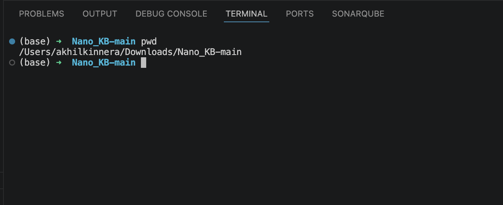
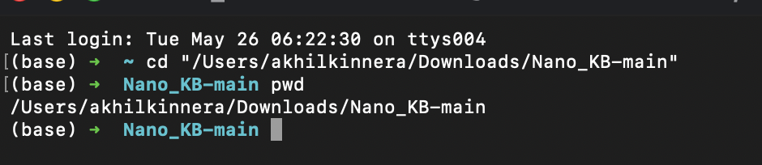
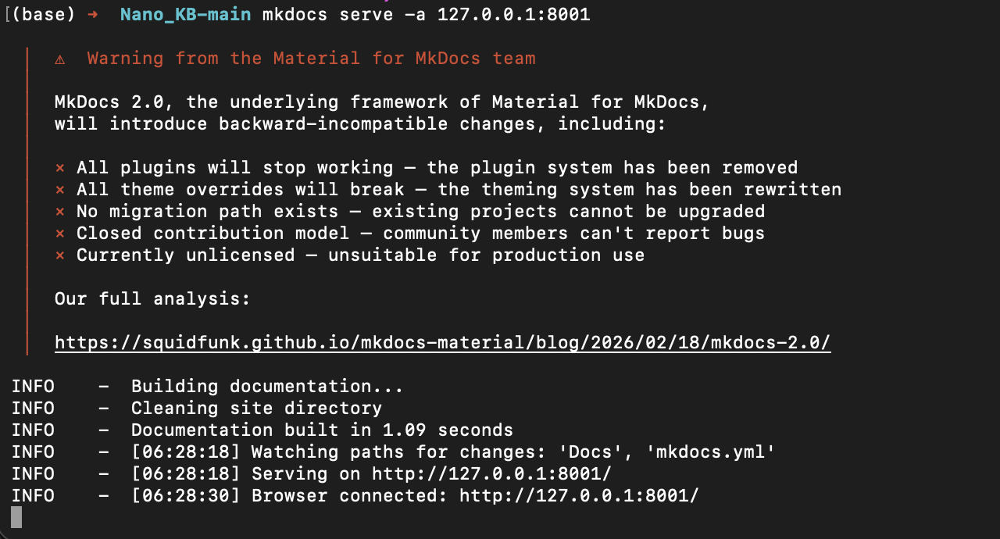
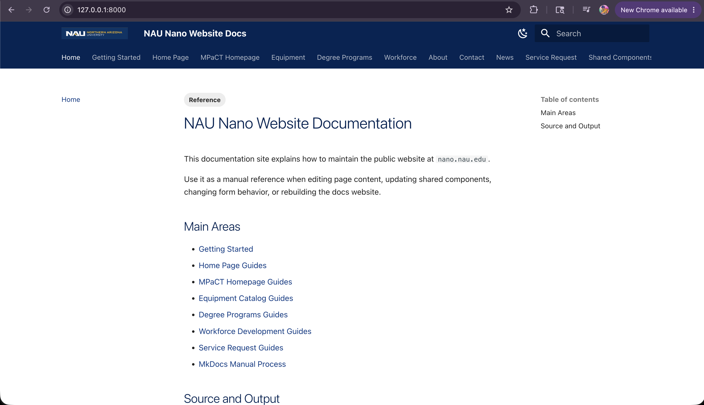
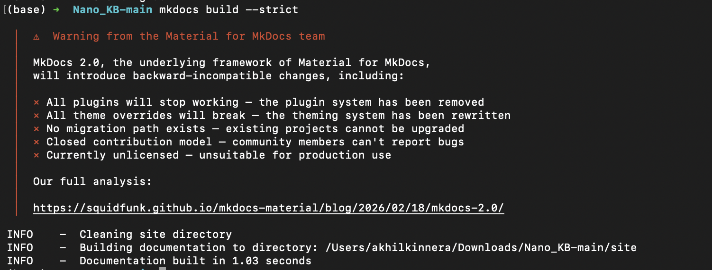

MkDocs Manual Process for Website Docs¶
This guide explains how to manually create, edit, organize, preview, and rebuild Website Docs.
The goal is to make the process repeatable for anyone creating or maintaining a documentation website by hand in VS Code or Terminal.
What We Are Building¶
Website Docs is a documentation website built from Markdown files.
In this project, Website Docs explains how to maintain the public website at nano.nau.edu.
The docs site is created from:
- Markdown files in
Docs/ - The site configuration in
mkdocs.yml - Custom styles in
Docs/assets/stylesheets/extra.css - Reference pages such as
Docs/reference/index.mdandDocs/reference/tags.md - Tags in Markdown front matter
- The navigation list in
mkdocs.yml
Folder Structure¶
Use this structure:
Why These Folders Exist¶
mkdocs.yml controls the website build. It tells MkDocs the site name, theme, plugins, Markdown features, custom CSS, and navigation.
Docs/ is the editable source folder. MkDocs reads this folder because mkdocs.yml uses docs_dir: Docs.
Docs/index.md is the home page of the docs website. Without it, the site has no clear landing page.
Docs/reference/ stores shared documentation rules. This is where tags, conventions, and the MkDocs manual process belong.
Docs/assets/stylesheets/extra.css stores NAU-specific visual styling for MkDocs Material. This keeps visual customization separate from the Markdown content.
Docs/assets/images/ stores images used by the docs theme, such as the NAU logo and favicon.
Page folders such as homepage/, Equipment Page/, and Workforce Development_A/ group guides by the public website area they explain.
Docs/md_file_images/ stores screenshots and visual references used inside the Markdown guides.
site/ is generated by mkdocs build. Do not edit generated HTML by hand because it will be replaced the next time the site is built.
MkDocs/ is older generated output in this checkout. Treat it as reference material unless the team decides to remove or archive it.
How Screenshot Paths Work¶
MkDocs reads files from Docs/, then builds them into the site/ folder as browser pages.
A source file such as this:
| Source Markdown file | |
|---|---|
builds into a page like this:
| Built page location | |
|---|---|
That matters because raw HTML image tags are resolved by the browser from the final page URL, not from the Markdown source file.
For a guide inside a folder, use a path that goes back to the site root before entering md_file_images/:
| Correct HTML image path | |
|---|---|
Do not use this path for those pages:
| Broken HTML image path | |
|---|---|
That path points to the wrong generated URL after MkDocs builds directory-style pages.
Screenshot Filename Mistakes to Avoid¶
Use web-safe screenshot names
For new screenshots, use simple filenames with lowercase words and hyphens.
| Web-safe screenshot filenames | |
|---|---|
Avoid raw # in image URLs
If an existing screenshot filename contains #, write it as %23 in the image path. In a browser URL, a raw # starts a page fragment and can stop the image from loading.
How to Open Bash in VS Code¶
- Open the project root folder in VS Code.
- Select Terminal from the top menu.
- Select New Terminal.
- Confirm the terminal opens at the project folder.
- Run this command to confirm the current folder:
| VS Code terminal | |
|---|---|
The output should show your project folder. The exact path depends on where the project lives on your computer:
| Example folder path | |
|---|---|
Example VS Code terminal check:

How to Open Bash in Terminal¶
Open Terminal, then move into the project root folder:
The second command confirms that you are in the correct folder before running MkDocs commands.
Example Terminal check:

Commands Anyone Can Run¶
Install MkDocs Material if it is not already installed:
| Install MkDocs Material | |
|---|---|
Preview the docs website locally. Use any open local port. This example uses 8001:
| Preview Website Docs | |
|---|---|
After this command runs, MkDocs prints a local preview URL. Open that URL in a browser to view Website Docs.
Example preview command:

Example browser preview:

Build the static website:
| Build static site | |
|---|---|
Build with strict checking:
| Strict build check | |
|---|---|
Use mkdocs build --strict before sharing the docs because it catches broken navigation links, missing files, and configuration mistakes.
Example strict build:

How Navigation Works¶
The visible site navigation is controlled by the nav: section in mkdocs.yml.
Each nav item has a label and a Markdown file path:
| mkdocs.yml navigation | |
|---|---|
The file paths are relative to the Docs/ folder.
If a file is moved, renamed, or added, update nav: so the site menu stays accurate.
How Tags Work¶
Tags are added at the top of a Markdown file in front matter:
Tags help people find related pages across different folders. They do not replace navigation.
The tag index is generated on this page:
| Tag index file | |
|---|---|
That page contains the Material tags marker. It is an HTML comment with material/tags inside it.
| Tags page marker pattern | |
|---|---|
MkDocs Material replaces that marker with the generated tag list during the build.
How Extra CSS Works¶
The custom CSS file is:
| Custom CSS file | |
|---|---|
It is loaded by this section in mkdocs.yml:
Use this file for site-wide docs styling, such as NAU colors, header styling, link colors, and heading colors.
Do not put public website CSS here. This CSS changes only the docs website.
Manual Update Workflow¶
- Decide which public website page or feature needs documentation.
- Create or edit the matching Markdown guide in
Docs/. - Add front matter tags when useful.
- Add screenshots to
Docs/md_file_images/if the guide needs visual proof. - Update
mkdocs.ymlundernav:if a new guide should appear in the menu. - Run
mkdocs build --strict. - Fix any broken links, missing files, or YAML mistakes.
- Run
mkdocs serve -a 127.0.0.1:8001and preview the site in a browser. - Capture final screenshots for handoff.
Source Editing Rule for Developers¶
Keep Docs/ as the source folder and keep generated output separate.
Website Docs source edits should happen only inside Docs/ going forward. That is the cleanest manual process because it matches docs_dir: Docs and keeps source files separate from generated HTML.